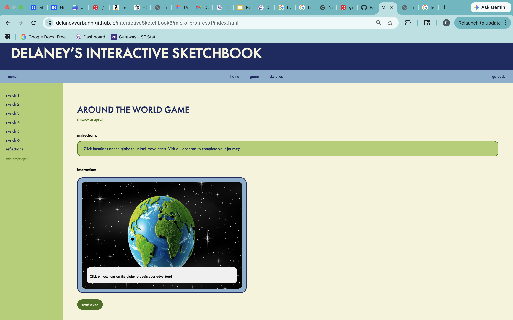

<!DOCTYPE html>
<html lang="en"></html>
<head>
    <meta charset="utf-8">
    <title>Interface Implementation — Progress Snapshot</title>

    <!-- CSS link -->
    <link rel="stylesheet" href="css/css">

    <!--FONT 1 -->
<link rel="preconnect" href="https://fonts.googleapis.com">
<link rel="preconnect" href="https://fonts.gstatic.com" crossorigin>
<link href="https://fonts.googleapis.com/css2?family=Darker+Grotesque:wght@300..900&family=Montserrat:ital,wght@0,100..900;1,100..900&family=Rock+3D&family=Rubik+Beastly&display=swap" rel="stylesheet">
    <!-- FONT 2 -->
<link rel="preconnect" href="https://fonts.googleapis.com">
<link rel="preconnect" href="https://fonts.gstatic.com" crossorigin>
<link href="https://fonts.googleapis.com/css2?family=Darker+Grotesque:wght@300..900&family=Montserrat:ital,wght@0,100..900;1,100..900&family=Rubik+Beastly&display=swap" rel="stylesheet">
<!-- p5 core -->
<script src="https://cdn.jsdelivr.net/npm/p5@1.9.0/lib/p5.min.js"></script>
</head>
<body>
<h1>Interface Implementation — Progress Snapshot</h1>
<a href="..//micro-progress1/index.html">Micro Project Interface Implementation</a>
<p>i think what i’ve implemented so far is a working version of my interactive sketchbook site with a consistent layout across pages and a functioning micro-project game built in p5, so structurally i have the header, navigation bar, sidebar, and main content all working together and the game is embedded inside the page instead of taking over the whole screen which was a big step. what’s structurally working is definitely the layout system, like the sidebar stays consistent, the nav is now positioned correctly with left, center, and right sections, and the page actually scrolls like a real website instead of feeling like a static frame. the game also works inside the layout and responds to clicks, and the restart button resets the state, so that interaction loop is complete.
what’s incomplete is mostly visual refinement and polish, like making everything feel fully cohesive and intentional instead of just “working,” and also improving feedback and interactivity in the UI like hover states, active states, and clearer indicators of where you are. i also think the integration between the game and the rest of the interface could be stronger, like right now it feels slightly separate visually.
my figma logic holds really well in terms of structure and hierarchy, like the consistent layout and navigation translated pretty directly, but it breaks in spacing and positioning because figma lets you place things exactly where you want while html and css rely on flow and relationships, so things didn’t line up automatically the way i expected. one big translation challenge was the navigation bar, because centering elements while keeping others on the sides was way harder than it seemed in figma and required more complex positioning.
what surprised me in code is how much the browser assumes flow, like everything wants to stack vertically unless you explicitly change it, and how small things like a height or overflow rule can completely break scrolling. css assumes content flows naturally and expands, while my design sometimes assumed fixed containers and exact spacing. html assumes a clear hierarchy, but my figma design was more visual than structural, so i had to rethink how things were grouped.
those assumptions collide when you try to force a static design into a flexible system, like wanting exact positioning but also needing responsiveness, and i think that’s where most of the friction came from.</p>

</body>
</html>